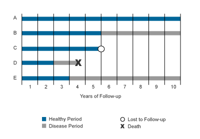
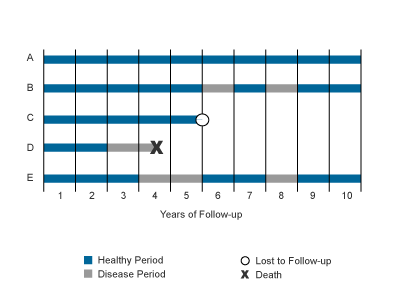

2 Measures of Occurrence
2.1 Population and case in Epidemiology
In Epidemiology, population is a group of people who share characteristics or meet criteria that define membership in the population (Lash et al. 2021).
Three common terms:
The source population is the population from which persons will be sampled and included in a measurement of disease frequency
The study population (population at risk) is the subset, up to a complete census, of the source population whose experience is included in a measurement of disease frequency
The target population comprises the persons for whom information gleaned by the measurement of disease frequency will be relevant
Case (or the outcome) definition should contain:
The method(s) used to identify a case. The procedures or instruments that have been used to identify a case.
The boundaries of a case. The cut-off point to be a case or non-case.
The unit of analysis(person, a household… )
Note: How we define a case influences how we define the study population.
2.2 Prevalence
The total number of individuals who have the condition (e.g., disease, exposure, attribute) at a particular time (or during a particular period) divided by the population at risk of having the condition at that time or midway through the period. (Porta 2014)
Point prevalence (often used) is the proportion of persons in a defined population that has the outcome under study at a specific point in time
\[\text{Point prevalence} = \frac{\text{Number of cases at time t}}{\text{Study population at time t}}\]
In the denominator, the study population at time t means excluding individuals lost to follow up and death.
Example:
Period prevalence is the number of cases in a population over a defined period of time. Not often used.
2.3 Incidence
Incidence risk is the proportion of new cases that occur in a population initially free of the condition during a specified period of time.
\[\text{Incidence risk} = \frac{\text{number of new cases in a defined time period}}{\text{population at risk at the beginning of the period}}\]
The incidence risk is a measure of NEW cases, and point prevalence a measure of EXISTING cases.
Mortality rate (or death rate) is a measure of the incidence risk of dying during a defined period of time.
Attack rate is a special kind of incidence risk. It is used in the context of outbreaks or epidemics of infectious diseases. It is the number of new cases occurring in the duration of the outbreak divided by the population at risk in the start of the outbreak.
Case fatality rate the proportion of cases of a specified condition that are fatal within a specified time.
\[\text{Case fatality rate} = \frac{\text{Number of deaths from a disease(in a given period)}}{\text{Number of diagnosed cases of that disease (in the same period)}}\]
Even though these measures are called rates but actually they are risk. The denominator does not include time (e.g person-year)
\[\text{Mortality rate} = \text{(Incidence risk ) x (Case fatality rate)}\]
Incidence rate relates the number of new cases to the total person-time at risk.
\[\text{Incidence rate} = \frac{\text{Number of new cases in a defined time period}}{\text{Total person-time at risk}}\]
Example 1:

\[\text{Prevalence at year 7} = \frac{1}{3}\] \[\text{Incidence risk over 10 years perios} = \frac{3}{5}\]
\[\text{Incidence rate over 10 years period} = \frac{3}{25}\text{per person-year}\] Example 2: Incidence rate

\[\text{Incidence rate over 10 years period} = \frac{5}{32} \text{per person-year}\]
2.4 Odds
Odds is the ratio of the probability of occurrence of an event to that of nonoccurrence. (Porta 2014)
\[\text{Odds} = \frac{\text{number of cases}}{\text{number of non-cases}}\]
The odds of becoming a case is rarely used as a measure of occurrence on its own. However, it is an important component of a measure of effect, the odds ratio
2.5 Comparison
The prevalence (P) quantifies all the people with an outcome at a point in time. It is influenced by the occurrence of new cases (incidence, I) and the duration of each case (D): P= I x D.
As so many factors influence prevalence, it is difficult to interpret comparative studies of the prevalence of the same condition in different settings.
It can also be difficult to interpret the reasons for a change in the prevalence of a condition in the same location.
However, prevalence studies provide useful information about the state of health of a community at a particular point in time, and so are useful for evaluating health-care needs and planning health service provision.
This is particularly important for chronic conditions that require health care resources throughout their duration.
The prevalence can also be used to evaluate the impact of preventative measures aimed at reducing the burden of a disease or condition in a community.
However, because of the number of factors that influence prevalence, any comparative results need to be interpreted with caution.
Prevalence is useful for chronic diseases that require health resource. It can be used for evaluating health-care needs and planning.
Incidence risk provides good evidence for studying causality when the outcome of interest is uncommon or acute diseases and the population is static.
Incidence rate is useful when the population is dynamic, the outcome of interest is common or the population at high risk(the number of new cases will be relatively high) or can occur many times.